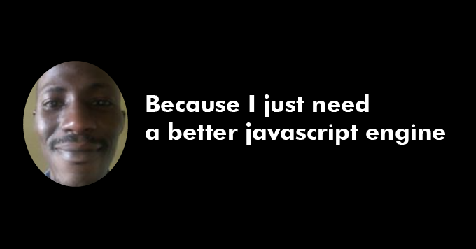

I just need a better javascript engine


After ford and the industrial complex revolution computers show us that they are better at applying Fordism than manufacture employees. With programming web divide tasks into small chunks of microtask to execute. This is the whole story behind complex systems because even if processors are becoming faster and faster they only can perform a finite number of tasks at a given time period which is a core parameter of a processor ( clock). System designers benefit from the experience of manufactures because they can see components of a system like human beings who are able to communicate and share tasks. For example, I am building now a scanner for the javascript engine I am building and I see the scanner module like a plant with many employees if of them scanning just a line of code and once done ask the manager to provide them another while others employees of this scanning plant just take the processed lines of code and work together for building an Abstract Syntax Tree. I am not recreating the wheel, I just want to build a better javascript engine because I need it for my project.